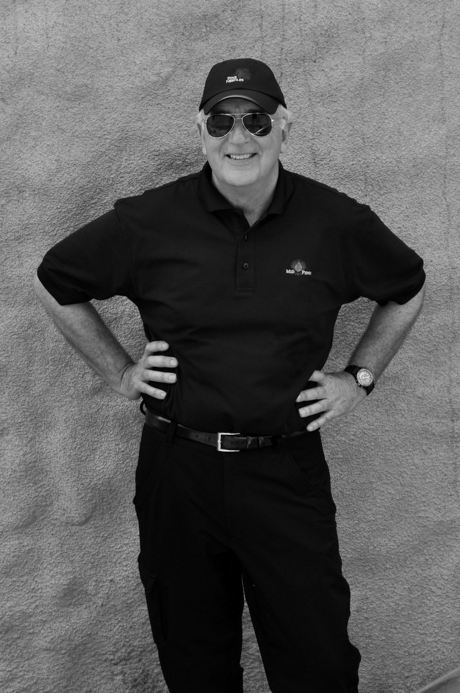

✳ Посты по дням · как выглядит обложка и что обязано быть в заголовке
Семь дней, две породы постов, которые приводят людей
✳ Шестой поток · старт 21 сентября
1 / 9
Закрытая группа по блогу.
8 мест
8 мест
:: Собираем двух AI-агентов для вашего блога. Посты, рилсы и лендинги по голосовому.
30 заявок · 289 000 ₽248 000 просмотров1 000 000 на посте
 Андрей Андреевслово · ЭКСКУРСИЯ
Андрей Андреевслово · ЭКСКУРСИЯПонедельник · 7 сентября · анонс № 1 · карусель
Шестой поток закрытой группы по блогу стартует 21 сентября. 8 мест
Внутри карусели: что человек получает (два AI-агента собирают посты, рилсы и лендинги по голосовому), кейсы участниц цифрами (Наталья: 30 заявок и 289 000 прибыли, Галина: 248 000 просмотров за неделю, Маша: миллион на одном посте), на последнем слайде «Напишите слово Экскурсия». Обложка белая, крупный заголовок, одно слово подчёркнуто, как у поста 22 августа. В подписи кодовое слово в первых двух строках, чтобы было видно без «ещё».
::В заголовке обязательно: дата старта, число мест, кодовое слово. Три элемента, без которых пост 22 августа не дал бы 1 299.
хукдата, места, слово: у поста 22.08 остановила конкретика «8 мест», не обещаниеструктурачто получаешь → кто уже получил (три кейса цифрами) → как войтипроблема«Контент есть, продаж нет, подрядчики не воспроизводят голос»движениетри недели с агентами, по голосовому, на своих материалахвыплатаНаталья: 30 заявок и 289 000; это выплата чужая, поэтому пост честный
почему: 26.07 — 1 329 подписок / 119 441 охвата · 22.08 — 1 299 / 142 195 · 05.08 — 629 / 65 742
фото того времени, не дизайн
В 35 я открыл бренд одежды. Вот что я понял о деньгах.
История, которую я ещё не рассказывал.
Вторник · 8 сентября · личная история · карусель
В 35 я открыл бренд одежды. Вот что я понял о деньгах
Не рассказанные ещё истории: 35 и бренд одежды, 44 и первое приложение в App Store. Заголовок повторяет структуру письма 30-летнему, которое дало 263 подписки: год или возраст, конкретная цифра, поворот. Внутри пять-семь слайдов, каждый одна фраза-вывод. Обложка — твоё фото того времени, вуаль снизу и заголовок с курсивом, как у письма.
::В заголовке обязательно: год или возраст, конкретная цифра, поворот. «Сегодня мне 45, и я написал себе 30-летнему письмо» держит все три.
вопросычего от меня не ждут (что я закрыл бренд), что не говорил вслух (сколько потерял), что изменило взгляд, какой урокпроблемав 35 хотел «своё» и открыл бренд, не понимая, где в нём деньгидвижениепроизводство, ткани, которые возил сам, долги (это из твоей биографии на странице коучинга); сколько лет длилось и чем закончилось — от тебя, я не знаювыплатаправило про деньги, которое теперь работает в блоге и коучинге
почему: 03.09 письмо — 263 подписки / 90 917 охвата · история конвертирует в подписку, чужая история в репост
✳ Ну вообще, да · выпуск 3
1 / 8
«Чтобы расти, надо выкладывать рилсы каждый день. Лента мертва»
Ну вообще, да.
Но есть нюанс.
Но есть нюанс.
лента · 99 % охвата неделирилсы · 1 %
Андрей Андреевитоги 30.08–05.09Среда · 9 сентября · серия «Ну вообще, да. Но есть нюанс» · выпуск 3
«Чтобы расти, надо выкладывать рилсы каждый день». Ну вообще, да. Но есть нюанс
Первые два выпуска 9 и 11 августа при охвате 12–18 тысяч дали 181 и 76 подписок, это 1,0 % и 0,6 %, лучшая конверсия среди неанонсных постов. Формат готов: чужая цитата в кавычках, потом ответ. Нюанс в этот раз про рост: лента дала 99 % охвата недели, и это один скриншот из «Итогов недели».
::В заголовке обязательно: чужая цитата в кавычках первой строкой. Это и есть хук серии.
хукчужая уверенная фраза, с которой читатель уже согласилсяструктурасогласие («ну вообще, да») → нюанс → доказательство одним скриншотомпроблемавсе говорят «снимай рилсы каждый день», а лента даёт 99 % охватадвижениенеделя 30.08–05.09: 8 постов в ленте, 2 рилса, цифры из «Итогов»выплатачитатель перестаёт себя винить за «мало рилсов» и репостит тем, кто винит
почему: 09.08 — 181 подписка / 18 158 охвата (1,0 %) · 11.08 — 76 / 12 313 (0,6 %)
✳ Деньги · цена
1 / 9
7 фраз, которые я говорю себе перед тем, как назвать цену
:: Стоматологу 80 тысяч платим спокойно. Свою цену называем с комом в горле.
Андрей Андреев7 слайдов · 7 фразЧетверг · 10 сентября · хук-список про деньги · карусель
7 фраз, которые я говорю себе перед тем, как назвать цену
Списки конвертируют в подписку в два с половиной раза лучше вопросов (0,51 % против 0,16 %). Тема из самой сильной зоны: пост про стоматолога за 80 тысяч 8 июня дал 237 подписок с 57 тысяч. Каждый слайд одна фраза плюс одна строка, почему она работает.
::В заголовке обязательно: число и слово из зоны денег: цена, деньги, тысяч.
хукчисло + сцена узнавания (стоматологу 80 тысяч платим спокойно)структура7 фраз, каждая: фраза → почему работает → когда сказатьпроблеманазвать свою цену страшнее, чем заплатить чужуюдвижениесемь фраз, которые Андрей сам говорит перед тем, как назвать ценувыплатачитатель называет цену на 20 % выше в тот же день; сохраняет, чтобы вернуться
почему: хук «число_список» — 0,51 % в подписку · 08.06 стоматолог — 237 подписок / 56 892 охвата
✳ Кейс участницы · поток
1 / 9
Наталья пришла с 5 000 подписчиков и без продукта. Через поток: 30 заявок и 289 000
старт 21 сентябряосталось N мест
Наталья · бизнес-психолог
Андрей Андреевслово · ЭКСКУРСИЯПятница · 11 сентября · анонс № 2 · карусель
Наталья пришла с 5 000 подписчиков и без продукта. Через поток: 30 заявок и 289 000
Тот же анонс с другого входа. 5 августа второй анонс потока дал 629 подписок, вдвое меньше первого, потому что повторял его дословно. Здесь заголовок строится от результата участницы, дата старта и число мест на первом слайде, кодовое слово на последнем и в подписи. Если к пятнице мест осталось меньше, число в заголовке обновить: это само по себе хук. На обложке в финале — реальная обложка поста Натальи из канала, здесь её место обозначено плашкой.
::В заголовке обязательно: результат участницы цифрой, дата старта, число мест; кодовое слово на последнем слайде и в подписи.
чертёжтот же чертёж анонса 26.07, другой вход: с выплаты участницы, а не с программыпроблемаНаталья: 5 000 подписчиков, блог рос медленно, мини-продукта не былодвижениепоток: два агента, посты и воронка по голосовомувыплата30 заявок, 289 000 прибыли, +2 000 подписчиков; потом дата и места
почему: второй анонс 05.08 — 629 / 65 742, повтор первого дословно; новый вход держит конверсию

«Семнадцать лет я писал в стол. Семнадцать лет ни одного опубликованного слова»
Стивен Прессфилд — автор «Войны за креатив». Жил в фургоне, работал водителем и сборщиком фруктов, первую книгу опубликовал в 52. Восемь цитат о сопротивлении.
@andreyandreev.me
Суббота · 12 сентября · чужая история · рубрика «Истории», ч/б
Семнадцать лет он писал в стол и жил в фургоне. Первую книгу опубликовал в 52
Порода докторантуры и Allis-Chalmers: реальный человек, поворот судьбы, цитата в конце. Рубрика остаётся чёрно-белой с портретом, как все истории серии. Подписок такой пост даёт 100–150, репостов больше тысячи, и этот охват работает на пятничный анонс, который ещё крутится.
::В заголовке обязательно: первое предложение сюжета, без «история о том, как». Цитата на обложке, биография в две строки внизу, счёт цитат.
чертёждокторантура и такси: реальный человек, поворот, цитата; герой новыйпроблема17 лет писал, ни одного опубликованного слова, жил в фургонедвижениеводитель, сборщик фруктов, продолжал писать каждое утровыплатапервая книга в 52, «Война за креатив», восемь цитат о сопротивлении
почему: 25.08 докторантура — 118 подписок / 1 207 репостов · 22.08 Allis-Chalmers — 111 / 1 315 репостов
✳ Итоги недели · 6–12 сентября
1 / 9
70 000.
Вот что сработало
Вот что сработало
:: Два анонса, одна история, один список. Цифры по дням внутри.
⟳ +1 500 за неделю
Андрей Андреевлистайте →Воскресенье · 13 сентября · «Итоги недели» в v4 · автомат в 12:00 + видео-обложка
70 000. Вот что сработало
Выпуск собирается сам в 12:00 в новом дизайне. Если неделя вышла на 70 000, обложка так и говорит, и это отдельный повод для репоста. Обложки постов недели едут внизу лентой, как в видео-версии.
::В заголовке обязательно: итоговая цифра и слово «сработало». Если 70 000 не вышло, честная цифра и «что дало больше всего».
хукитоговая цифра первой строкойструктурачто вышло → откуда охват → кто подписался → что сработаловыплатачитатель видит, что рост это чертёж, а не удача, и репостит
почему: рубрика уже идёт каждое воскресенье; 30.08–05.09 — 10 публикаций, 241 865 охвата, +722